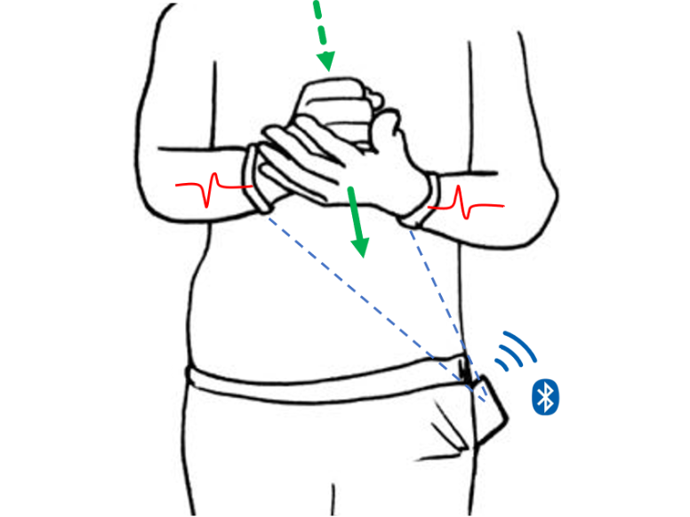
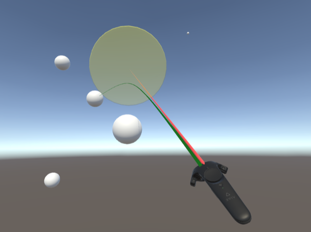
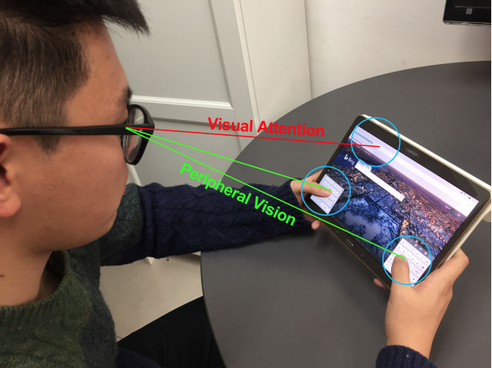
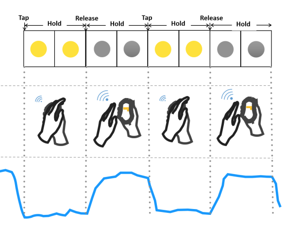
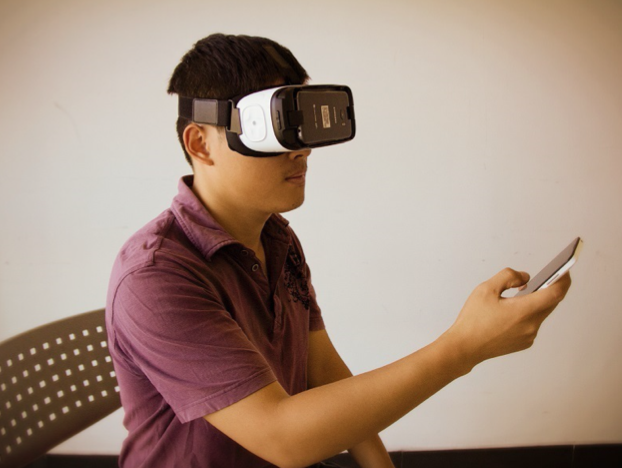

Hello, I'm Yiqin Lu, a fourth-year Ph.D. student in Pervasive Human-Computer Interaction Group, Tsinghua University. My advisor is Prof. Yuanchun Shi and Prof. Chun Yu. I received my Bachelor's degree at Department of Computer Science & Technology, Tsinghua University.
My research interests are input technologies on mobile devices like smartphones, smartwatches and head-mounted displays, in which I focus on the intention inference of users' low-effort inputs with multiple modalities like touch, gesture, gaze and so on.
[5] |
Designing and Evaluating Hand-to-Hand Gestures with Dual Commodity Wrist-Worn DevicesIMWUT 2020 Yiqin Lu, Bingjian Huang, Chun Yu, Guanhong Liu, Yuanchun ShiWe explore the design space of hand-to-hand gestures, a group of gestures that are performed by touching one hand with the other hand. Hand-to-hand gestures generate simultaneous vibration on two hands that can be sensed by dual off-the-shelf wrist-worn devices. In this work, we derive a gesture vocabulary with ... |
 |
[4] |
Investigating Bubble Mechanism for Ray-Casting to Improve 3D Target Acquisition in Virtual RealityIEEEVR 2020 Yiqin Lu, Chun Yu, Yuanchun ShiInspired by the bubble cursor which dynamically resizes its selection range on 2D surfaces, we investigate a bubble mechanism for ray-casting in virtual reality. Bubble mechanism identifies the target nearest to the ray, with which users do not have to accurately shoot through the target. We first design the criterion of ... |
 |
[3] |
Typing on Split Keyboards with Peripheral VisionCHI 2019 Yiqin Lu, Chun Yu, Shuyi Fan, Xiaojun Bi, Yuanchun ShiTyping on a split keyboard often requires eye movement and attention switching between two halves of the keyboard, which slows users down and increases fatigue. We explore peripheral typing, a superior typing mode in which a user focuses her visual attention on the output text and keeps the split keyboard in peripheral vision. Our investigation showed that peripheral typing increased performance (27 WPM, 28% faster) over ... |
 |
[2] |
Tap-to-Pair: Associating Wireless Devices with Synchronous TappingIMWUT 2018 Tengxiang Zhang, Xin Yi, Ruolin Wang, Yuntao Wang, Chun Yu, Yiqin Lu, Yuanchun ShiWe propose Tap-to-Pair, a spontaneous device association mechanism that nitiates pairing from advertising devices without hardware or firmware modifications. Tapping an area near the advertising device’s antenna can change its signal strength. Users can then associate two devices by synchronizing taps on the advertising device with the blinking pattern displayed by the scanning device. By leveraging the wireless transceiver ... |
 |
[1] |
BlindType: Eyes-Free Text Entry on Handheld Touchpad by Leveraging Thumb’s Muscle MemoryIMWUT 2017 Yiqin Lu, Chun Yu, Xin Yi, Yuanchun Shi, Shengdong ZhaoWe explore eyes-free typing on a touchpad using one thumb, wherein a user taps on an imaginary QWERTY keyboard while receiving text feedback on a separate screen. Our hypothesis is that users can transfer their typing ability obtained from visible keyboards to eyes-free use. We propose the relative algorithm which ... |
 |
Tsinghua's Friend - Jin Tan Ying Cai Scholarship
Outstanding Graduates of Department of CS&T
Champion of SC Student Cluster Competition (SC'15)
National Scholarship
CHI ('18 '19 '20), IMWUT ('19 '20), MobileHCI ('18 '19), ICMI'19, DIS'20
Focus on deep learning, face detection, face landmark and data augmentation
2020 © Elvish. Design by ThemesBoss.